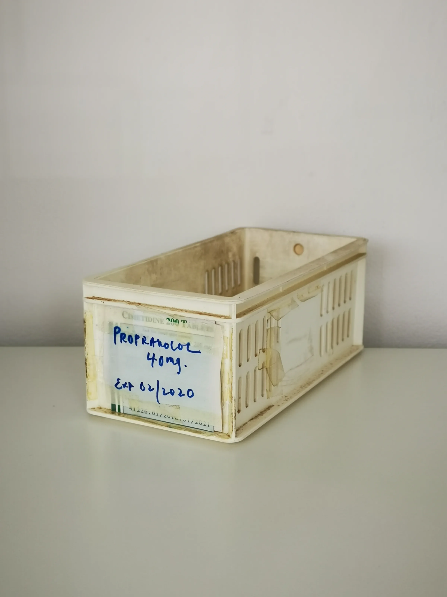

This guide provides practical insights for sourcing wholesale aesthetic supplies, tailored for distributors, clinics, and spas.
In the competitive landscape of aesthetic supplies, professional buyers face the challenge of sourcing high-quality products that meet the diverse needs of their clients. Whether you are a distributor, a clinic, or a spa, understanding the nuances of wholesale aesthetic supply is crucial to ensure you are making informed purchasing decisions. The right products can enhance your offerings and drive customer satisfaction, but navigating the wholesale market requires careful consideration and strategic planning.
This guide is designed to equip you with the knowledge you need to effectively source wholesale aesthetic supplies. From understanding the key factors that influence your choices to practical tips for comparing options, this article will help you streamline your procurement process and optimize your inventory management.
Key Takeaways
- Identify reliable wholesale aesthetic supply distributors to ensure product quality and consistency.
- Understand minimum order quantities (MOQ) to optimize your purchasing strategy and manage cash flow.
- Evaluate product packaging and labeling for compliance and ease of use in your business.
- Communicate effectively with suppliers to clarify shipping, documentation, and reordering needs.
- Plan ahead for seasonal demand fluctuations to avoid stockouts and excess inventory.
What this guide covers
- Understanding wholesale aesthetic supplies
- Identifying relevant buyers
- Comparison criteria for sourcing
- Checklist for requesting quotes
- Logistics and documentation considerations
- Minimum order quantities and reorder planning
- Frequently asked questions
What buyers should understand first

Wholesale aesthetic supplies encompass a wide range of products used in beauty and wellness treatments, including injectables, skincare products, and equipment. These supplies are essential for clinics, spas, and resellers who aim to provide high-quality services to their clients. Understanding the characteristics of these products, such as their formulation, shelf life, and storage requirements, is vital for maintaining quality and compliance.
As a professional buyer, it is important to familiarize yourself with the various types of aesthetic supplies available in the market. This includes knowing the difference between various brands, formulations, and packaging options. By doing so, you can make informed decisions that align with your business goals and customer expectations.
Which buyers is this most relevant for?
This guide is particularly relevant for a variety of buyers in the aesthetic supply chain, including:
- Clinics: Medical and cosmetic clinics looking to stock injectables and skincare products.
- Spas: Day spas and wellness centers seeking to enhance their treatment offerings with high-quality products.
- Resellers: Distributors and wholesalers aiming to provide a diverse range of aesthetic supplies to their clients.
- Online Retailers: E-commerce businesses focused on selling aesthetic products directly to consumers.
Each of these buyers has unique order planning needs and may evaluate suppliers based on different criteria, such as product availability, pricing, and shipping options.
How to compare options before ordering
When sourcing wholesale aesthetic supplies, it is essential to compare options effectively. Here are some practical criteria to consider:
- Product Type: Ensure the product meets the specific needs of your clientele.
- Brand Reputation: Research the supplier’s reputation and product reviews to gauge quality.
- Packaging: Evaluate packaging for safety, compliance, and ease of use.
- Batch and Expiry Visibility: Confirm that the supplier provides clear information on batch numbers and expiration dates.
- Supplier Communication: Assess how responsive and informative the supplier is during your inquiry process.
- Destination Requirements: Consider any specific shipping or customs requirements for your location.
Buyer checklist before requesting a quote

- Define your product needs and specifications.
- Determine your budget and pricing expectations.
- Establish your minimum order quantities (MOQ).
- Prepare a list of potential suppliers for comparison.
- Gather necessary documentation for shipping and customs.
- Clarify any specific packaging or labeling requirements.
- Plan for delivery timelines and logistics.
Shipping, packing and documentation questions
Logistics play a crucial role in the procurement of wholesale aesthetic supplies. Here are some common questions buyers may have:
- What are the shipping options? Understand the available shipping methods and their associated costs.
- How is the product packed? Ensure products are securely packaged to prevent damage during transit.
- What documentation is required? Confirm what paperwork is needed for customs clearance and compliance.
- How do I track my shipment? Inquire about tracking options for your orders.
MOQ, quotation and reorder planning
When preparing to order, it’s important to consider your minimum order quantities (MOQ) and how they align with your business needs. Here are some tips for effective planning:
- Assess your current inventory levels and forecast demand.
- Determine the variants and quantities you need for each product.
- Communicate your destination details clearly to the supplier.
- Contact SOLA to confirm current availability and request a wholesale quotation.
FAQ
What is the typical MOQ for aesthetic supplies?
The MOQ can vary by supplier and product type, so it’s important to check with each distributor for their specific requirements.
How can I ensure product quality?
Research suppliers, read reviews, and request samples if possible to assess product quality before placing a large order.
What should I include in my quote request?
Include product specifications, desired quantities, and any specific shipping or packaging requirements in your quote request.
How do I handle customs for international orders?
Consult with your supplier and local customs authorities to understand the necessary documentation and regulations for importing aesthetic supplies.
Can I reorder the same products easily?
Establish a good relationship with your supplier to streamline the reordering process and ensure consistent product availability.
Contact SOLA for wholesale quotation via WhatsApp.
Planning a wholesale request?
Send product names, quantities and destination for a tailored discussion.
Contact SOLA on WhatsApp →General educational content for professional buyers. Not medical, legal, regulatory or import advice.
Image sources: Medicine storage container 08.jpg by Wikimedia Commons contributor (CC0, 2736x3648 px); Balikatan 25- U S , Philippine forces construct multi-purpose warehouse, prepare medical supplies to local community (8962075).jpg by Lance Cpl. Roger Annoh (Public domain, 8192x5464 px).